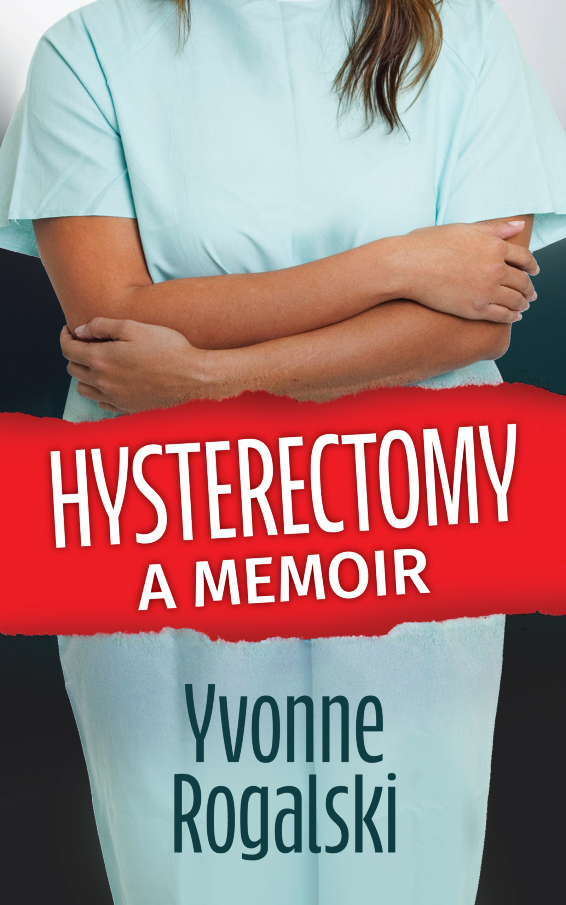

A Memoir
A darkly funny, gut-wrenchingly honest account of years of pain, one radical surgery, and the terrifying, absurd, sometimes hilarious business of almost not surviving it.

"Hysterectomy: A Memoir is the book so many of us didn't know we needed. Yvonne Rogalski takes an unflinching, up-close look at the maddening expectations placed on women and the impossible mess that is the U.S. healthcare system, and she does it with a voice that is equal parts raw, razor-sharp, and hilarious. "
— Elizabeth Bergman - Amazon Review
About the book
Chronic. Endometriosis. Pain. For treatment, I tried almost everything-except for the medical psychic that one of my well-meaning docs recommended. I wanted a hysterectomy. When I couldn't find anyone to give one to me, I gave up and gave in to using bath towels and Vicodin to get through my monthly periods.
This "worked" until my bowels protested and landed me in the urgent care. There, an urgently caring doctor said, "You can't continue to take opiates for your periods." I told her about trying to get a hysterectomy. She told me I could pay for one PRIVATELY (and also gave me a laxative bowel-fixer elixir).
So, in early 2018, during my semester sabbatical from teaching, I dropped big bucks on a radical hysterectomy, which is not as cool as it sounds. Annoyed by my slow recovery, not finding any of my symptoms listed as alarming on my post-surgery discharge sheet, I packed my dog, my husband, and my medications for a road trip south in more ways than one. We left from Ithaca, New York and made our way to Athens, Georgia, our final destination, where I experienced a southern hospitalization and became an inpatient medical mystery.
Watch
Already read the book?
If you enjoyed the story, please consider leaving a brief, honest review. It takes less than two minutes and helps other readers find my work.
 Follow on Instagram
Follow on Instagram